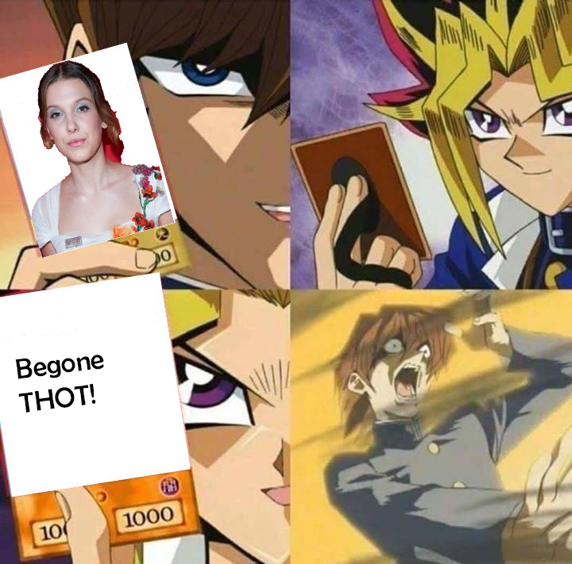
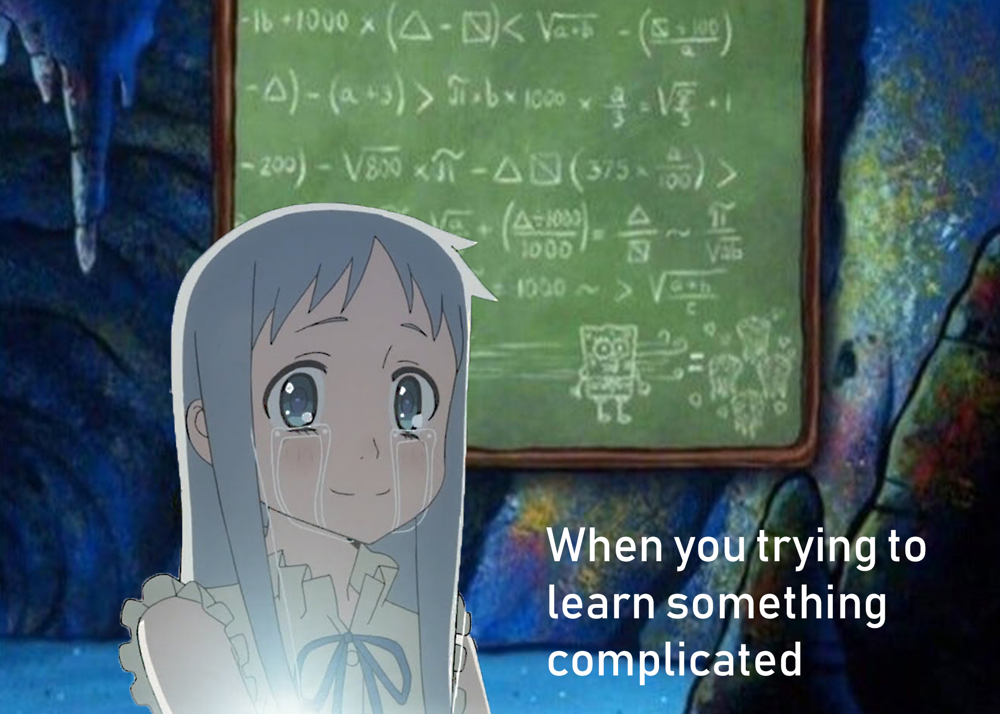

This is Meme Project.

This meme is using the Yu Gi Oh meme. This meme is about eliminating them thots.

This meme is about "when you something to learn something complicated". I made this meme because everyone at some point will face learning something they aren't comfortable with.